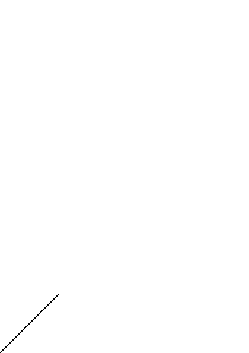
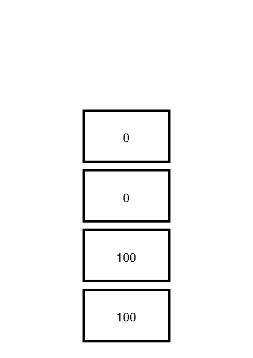
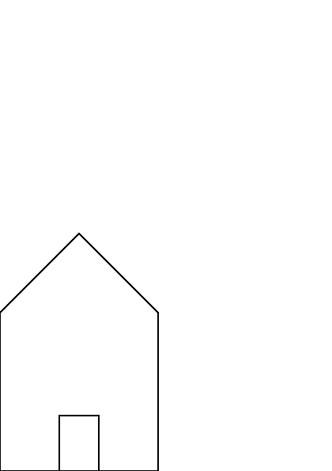
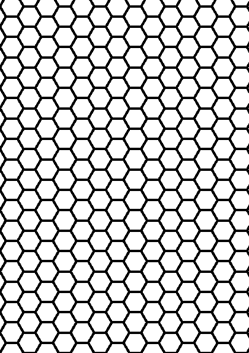

PostScript
How to talk to your printer
You are looking at the guide accompanying a workshop about PostScript.
PostScript is a page description language. It allows developers to describe precisely how marks should appear on a page.
We believe in learning by doing, so you can expect to be asked to open your favorite editor or integrated development environment and gain first-hand practical experience with PostScript, by following along this guide. Exercises along the way help cement your new found knowledge making you into a PostScript whisperer.
What to expect
This book is divided into the following parts
- Introduction
- Tools
- Projects
- Appendices
Introduction
In the introduction part we will set the scene and talk about the what PostScript is, how it evolved and how it can be used. It will provide some context which will help to make sense of some of the language design decisions.
Tools
Tools are provided to have a better understanding of what makes PostScript tick.
The chapters are divided along interesting features that can and are used during the projects.
Projects
Projects are Bob Ross inspired expositions of the capabilities of PostScript. You should be able to dive right into a project, and have a holistic understanding of the tools. When you want to dive deeper into a certain subject, you can fall back onto the tools part. Remember, there are no mistakes, only happy accidents.
The projects are by no means the final destination. They are meant as a inspiration to fuel your own explorations into PostScript. It is literally a blank canvas that invites you to express your creativity.
Appendices
The appendices are there to provide context that are not naturally placed within the guide. They can be used as a resource for future studies and sometimes inspiration.
Origin
PostScript has a rich history that we delve into here for a small bit.
Developed by Adobe Systems PostScript culminated in 1984 as a laser printer driver. Now almost entirely replaced with its successor Portable Document Format (PDF), it is a
page description language in the electronic publishing and desktop publishing realm. It is a dynamically typed, concatenative programming language.
PostScript allows you to accurately describe how a page should look like. It is a language that usually is generated by a program instead of written by hand. Which is a shame because it is a beautiful language full of interesting aspects.
Characteristics
PostScript is described as a
dynamically typed, concatenative programming language
What does this mean?
Dynamically Typed
A type is a property associated with a certain programming constructs that can be used to determine what operations are legal.
Dynamically typed means that the type, i.e. the property that determines legal operations, is only known at runtime.
Concatenative
A concatenative language is part of programming paradigm that favors composition of functions over function application. This might be as illuminative as a broken flashlight.
What is meant by that can be illustrated by a code example in a pseudo language. Function application, i.e. applying functions to their arguments, typically looks like
x = f(w)
y = g(x)
z = h(z)
Here function f is applied to argument w, that result is applied to function g, etc.
In a concatenative language the same example would typically look like
w f g h
It's probably best to try your hand on an actual concatenative language to get a feel for the trade-offs between the different paradigms. Luckily PostScript provides just such a language.
Hello, World

The practice of a "Hello, World!" program, i.e. a simple program to demonstrate that your tool chain works as intended, has many forms. For PostScript this would be outputting a single line. In this chapter we are going to achieve just that.
Start your engines
Getting feedback is important. The sooner, the better. That is why we are going to use Ghostscript.
Ghostscript is
an interpreter for the PostScript® language and PDF files. Ghostscript consists of a PostScript interpreter layer and a graphics library.
You can find some notes about installing Ghostscript in the appendix.
Go ahead and start a Ghostscript session.
Note: Ghostscript on macOS does not have a rendered output. Instead of using the REPL you can write the instructions to a file and use
ps2pdfto generate a PDF or use the PostScript interpreter on https://postscript-render.fly.dev/ for this workshop.
Read-Eval-Print-Loop
When you start Ghostscript the following things happen:
- A window is opened that shows a blank page. The page will show the output of the PostScript program that we enter.
- A Read-Eval-Print-Loop (REPL) is started. Via this REPL we can communicate with the PostScript interpreter.
The REPL first prints a header, something akin
Copyright (C) 2019 Artifex Software, Inc. All rights reserved.
This software is supplied under the GNU AGPLv3 and comes with NO WARRANTY:
see the file COPYING for details.
And offers a prompt
GS>
Let's get moving
We will interact with the page by executing commands in the REPL. The first command will be moveto.
Enter the following line into the REPL.
0 0 moveto
Even when you look closely, the page will not be changed. The only thing that happened is that the current path is extended with a move to the origin. What this means will become clear in later chapters.
Draw the line
The next step in this walkthrough is drawing the line. This can be achieved with the lineto command
100 100 lineto
Again, nothing seems to have changed on the page. The PostScript interpreter only extended the current path with a line.
Stroke the current path
Only when we issue the stroke command, will the PostScript interpreter update the page.
stroke
Celebrate 🎉
With a line drawn on the page, you are well on your way to becoming a master of PostScript!
Final Thoughts
showpage
If you want to experiment some more it could be nice to start with a clean slate. The showpage command can be used for this. When you issue it
showpage
The REPL will respond with
>>showpage, press <return> to continue<<
When you continue the page is updated and you start in a fresh state. For an actual printer, the showpage command would instruct the printer to print all the marks on actual paper!
newpath
We have seen that the PostScript interpreter maintains a current path, and moveto and lineto commands modify it and stroke renders it on the page.
If you want to make sure that you start with a clean slate you can issue the newpath command. This will clear the current path and allows you to start anew.
Summary
We have created our first PostScript program by entering the following commands in the REPL.
newpath
0 0 moveto
100 100 lineto
stroke
showpage
It uses the following commands:
newpath: clears the current path.moveto: extends the current path, and sets the current point.lineto: extends the current path with a line from the current point to the point as specified by the arguments.stroke: draws the current path.showpage: Evicts the page and starts a new one.
Exercises
- What does the following program draw?
newpath
0 100 moveto
100 0 lineto
0 0 moveto
100 100 lineto
stroke
showpage
- With the commands you learned draw a simple house that looks like the house below

Stack
I would like to revisit the "Hello, World!"-program to highlight an important point. For completeness, here is the source of the "Hello, World!"-program that draws a line on the page.
0 0 moveto
100 100 lineto
stroke
A different program that produces the exact same output is shown next
100 100 0 0
moveto
lineto
stroke
How can this be?
Operators
In the last chapter we have called moveto a command. The name that PostScript uses is operator.
An operator is a functionality that PostScript provides. We have seen examples like newpath, moveto, lineto and stroke. Some operators need data to operate correctly. PostScript calls the necessary data operands. You can think of them as arguments to the operator.
Operand Stack
Operands to operators are taken from the operand stack. A stack is
an abstract data type that serves as a collection of elements, with two main principal operations:
Push, which adds an element to the collection, andPop, which removes the most recently added element that was not yet removed.
Below we can see a stack with two items, 100 and 90.

The item 100 is said to be on the bottom of the stack, the item 90 is said to be on the top of the stack. When one pushes the item 10 on the stack, the stack grows upward.

Value
When the PostScript interpreter encounters a value, like 100, 90 or 10, it will push it on the operand stack. So the first part of the alternative "Hello, World!"-program
100 100 0 0
Will push the values 100, 100, 0 and 0 on the operand stack. Resulting in a stack that looks like this

Operator
When the PostScript interpreter encounters an operator it will execute it. If an operator needs operands to operate, it will take does from the operand stack.
For example, the moveto operator expects two operands. It will pop does from the operand stack.
100 100 0 0
moveto
So the above program will result in an operand stack similar too

It leaves two operands for the lineto operator to consume.
Stack underflow
When the PostScript interpreter encounters an operator, but the necessary operands aren't on the stack, a stack underflow error is issued.
For example, when ones starts a Ghostscript session and immediately performs moveto
GS> moveto
one is greeted with an error:
Error: /stackunderflow in --moveto--
Operand stack:
Execution stack:
%interp_exit .runexec2 --nostringval-- --nostringval-- --nostringval-- 2 %stopped_push --nostringval-- --nostringval-- %loop_continue --nostringval-- --nostringval-- false 1 %stopped_push .runexec2 --nostringval-- --nostringval-- --nostringval-- 2 %stopped_push --nostringval--
Dictionary stack:
--dict:727/1123(ro)(G)-- --dict:0/20(G)-- --dict:75/200(L)--
Current allocation mode is local
Last OS error: Resource temporarily unavailable
Current file position is 7
While developing PostScript programs one often encounters these kind of errors.
Summary
PostScripts maintains various stacks. One of them is the operand stack. The operand stack is manipulated by pushing values onto them. Operators take values from the stack by popping operands from the stack. When an operator tries to pop operands from the stack which does not have enough items a stack underflow error occurs.
Exercises
- For each of the following program fragments, draw the resulting operand stack.
100 100
100 100
0 0
100 0
100 100
0 0
100 0
0 100
moveto
100 100
0 0
100 0
0 100
moveto
lineto
100 100
0 0
100 0
0 100
moveto
lineto
moveto
lineto
What does the last program look like when printed?
- Write a program that results in an operand stack like this:

- Is it always possible to write programs that first pushes all the operands on the stack before executing operators?
Stack Manipulation
Because the stack is so important, PostScript offers a slew of operators to manipulate the operand stack. In this chapter we are going to explore some of them.
We could show a picture of the stack, but that takes up a lot of space. Instead we will rely on a representation of the operand stack that fits on a line.
\[ a_{n-1}\ a_{n-2}\ \dots\ a_{1}\ a_{0} \]
The above line represents a stack that has \(n\) items. The bottom item is \(a_{n-1}\), the item above that one is \(a_{n-2}\), etc. The top item is \(a_{0}\).
Operators
push
Pushes onto the operand stack are often implicit. For example, it is enough just to list the value for it to be pushed on the operand stack.
37
The program listing above will push the value 37 onto the operand stack.
pop
The opposite of pushing is popping. This can be achieved by the pop operator. This will remove the top most item from the operand stack.
37 51 pop
This leaves the operand stack containing the value 37.
dup
To duplicate the top element on the operand stack use the dup operator.
37 dup
The above program will result in an operand stack containing two values: 37 37.
exch
If there are more than two items on the operand stack, exch allows you to exchange the top two items. If the operand stack contains 1 2 3, the operator exch will exchange the 2 and the 3, resulting in a stack containing 1 3 2. The program below demonstrates that behavior.
1 2 3
exch
copy
The copy operator is like dup on steroids. The dup operator copies the top most item on the operand stack. The copy operator, when provided with a number n to copy, copies the topmost n items.
Look at the following program.
1 2 3 4
3 copy
The first line pushes the values 1, 2, 3 and 4 on the operand stack. The next line, specifically 3 copy, first puts 3 on the operand stack and then executes the copy operator. This pops the top most number from the stack, in this case that would be 3, and copies that many elements onto the stack. This results in a operand stack
1 2 3 4 2 3 4
roll
Just like how copy is a generalization of dup, roll is a generalization of exch.
Assume we have the following stack
\[
\ldots\ a_{n-1}\ a_{n-2}\ \ldots\ a_{0}
\]
The roll operator allows to select the top most n items from the stack and "roll" them through j positions. So executing n j roll with the above stack results in
\[
\ldots\ a_{j-1}\ \ldots\ a_{1}\ a_{0}\ a_{n-1}\ a_{n-2}\ \ldots\ a_{j}
\]
With a concrete example, the following program
1 2 3 4
3 2 roll
results in the operand stack being
1 3 4 2
index
The index operator allows you to copy a single element in the operand stack to the top. With an operand stack as below
\[
\ldots\ a_{n}\ a_{n-1}\ \ldots\ a_{j}\ \ldots\ a_{0}
\]
the snippet j index results in a stack like
\[ \ldots\ a_{n}\ a_{n-1}\ \ldots\ a_{j}\ \ldots\ a_{0}\ a_{j} \]
Or with a concrete example
1 2 3 4
2 index
results in the operand stack
1 2 3 4 2
count
To count the number of items on the operand stack use the count operator.
clear
If you want to remove all the items execute the clear operator
Philosophy
Manipulating the operand stack is an important skill to learn. So much so that idiomatic PostScript advocates to think hard about the order of arguments and exclusively use operand stack manipulations.
This advice is written for application that generate PostScript in mind. When using PostScript creatively there are other mechanisms to organize your program. Ways that are geared towards readability and maintainability.
That does not mean that stack manipulation isn't worthwhile. It allows great flexibility.
Exercises
- What happens when there is only one item on the operand stack when
exchis executed? - How can you use
copyto simulatedup? - How can you use
rollto simulateexch? - How can you use
indexto simulatedup? - What happens when you use negative numbers as the second operand for the
rolloperator? The second operand is the one on the top on the stack whenrollis executed. - The stack contains
1 2 3 4. Create a program to reverse the operand stack that contains four items.
Variables
Up until now all the operands that we used are put on the stack from literal values. When we are working on larger projects that quickly becomes a hassle. In this chapter we will learn how to define variables that can be reused.
Key
PostScript has a notion key. They are akin to symbols in Ruby. Keys provide a way to associate a value to a certain name.
You create a key by prefix a sequence of certain characters with a slash: "/". So the following code
/booster
pushes a key on the operand stack that is identified by the name booster.
Definition
To associate a value with a key PostScript uses the def operator. For example the following code
/size 100 def
associates the value 100 with the key /size.
Lookup
When you want to use the value that is associated with a certain key, you can look up the value by using the name of the key.
For example, the result of the following code
/size 100 def
size size
is that the value associated with the key size is pushed on the stack twice. In this particular case the top two items of the operand stack would be 100 and 100.
Benefits
The same benefits of using variables apply to PostScript programs as well as in other programming languages. Those include:
- Readability: A program that uses well chosen names can help in understanding code.
- Reuse: Instead of copying the literal value, variables allow you to reuse that value.
- Adoptability: When a value needs to change there is a single source of truth for it. This makes it easier to experiment with different values.
- Maintainability: Variables, when used to your benefit, serve as a form of documentation. They allow to show the intent which helps in the maintainability of code.
Tip
An idiom that you often encounter in PostScript programs involving the def operand is the following
100 /size exch def
If you take a minute to think about the above code sample, you might come to the conclusion that it associates the value 100 with the key /size.
The reasoning could go like this: The literal value 100 is pushed on the stack first, then the key /size is pushed on top of that. The exch operator changes the order of the top two items on the stack. So now, /size is at the bottom and 100 is on top. Just like if we would have executed the following code
/size 100
The def operator takes the two items on the stack and associates the key with the value. In this case size is associated with 100.
One place that you will use this idiom is when you have a long and involved calculation to produce a value and want repeated access to the value. Instead of first pushing a key onto the stack, performing the calculation and then making an association, effectively like this
/size
.
.
.
lines and lines of code to calculate a value
.
.
.
def
You could rearrange that into
.
.
.
lines and lines of code to calculate a value
.
.
.
/size exch def
This way the key is closer to the definition, which could aid in understanding.
Exercises
- You made a PostScript program that draws a house in the "Hello, World!"-chapter. Introduce some variables into your program that allows you to manipulate the shape of the house by changing the values.
- The dimensions for an A4 sheet of paper are 210 millimeters by 297 millimeters. Create a program that binds variables to these numbers.
Arithmetic
We have learned how to use variables in PostScript. Sometimes we want a group of variables related to each other.
For example, if you are drawing a house with a door, where the door should be directly in the center of the house. In this situation the location of the door should be calculated from the width of the house and the width of the door.
That is why we are looking at arithmetic operators.
Operators
Like regular operators arithmetic operators take arguments from the stack and places their results back on the stack.
There are corresponding operators for addition, subtraction, multiplication and division. The operators usually have a shortened name
| Operation | Operator name |
|---|---|
| addition | add |
| subtraction | sub |
| multiplication | mul |
| division | div |
It would become pretty boring to list all the known arithmetic operators. Instead I would like to point you to the reference manual for an complete overview. You can use that to lookup operators that you think would exist.
Exercises
- In your drawing of a house, add a centered door.
- Assume that there are two numbers on the stack. What does the following program calculate
dup mul exch
dup mul add
sqrt
Procedures

In the exercises before you found the opportunity to draw a house. An example of a house can be seen below

The image that opens this chapter is based on the above house. The naive way to create the opening image is to repeat the code and change the relevant parameters.
Although feasible, this is repetitive, error-prone and not much fun. We would rather create a procedure that does the work for us.
Deferred Execution
There is an interesting aspect to creating a procedures in PostScript or, for that matter, any interpreted language.
Take for example the add operator. The operator add takes two operands from the stack, adds them together and puts the result back onto the stack. But if we are creating a procedure, that should not happen when we are creating the procedure. It should happen when we execute the procedure. It should defer the execution until the procedure is called.
To signal to the PostScript interpreter to defer the execution of operators you use the opening brace: {.
This is akin to C-style languages, but it does play a different role here.
With a little imagination one could guess that to finish defining a procedure one uses the closing brace: }.
Venerable "Hello, World!"-example
Let's hark back to the PostScript variant of the "Hello, World!"-program. There we created a line. If we wanted to create a procedure for that we could do that in the following way.
I have opened a REPL in order to better explore how PostScript handles procedures. When I go and type in the following code into the REPL
GS>{
0 0 moveto
100 100 lineto
}
the PostScript interpreter responds with
GS<1>
Indicating that there is something on the operand stack. Using pstack to show the contents of the operand stack, PostScript echos back the definition of the procedure:
GS<1>pstack
{0 0 moveto 100 100 lineto}
With a procedure at the top of the stack, we can execute it with the exec operator. This is a novelty operator that we probably will use sparingly, but it gets the job done.
GS<1>exec
Remember, the only thing that will happen is that the current path is extended. Not until we stroke the path will anything become visible.
GS>stroke
The entire transcript of the REPL run is found below.
GPL Ghostscript 9.50 (2019-10-15)
Copyright (C) 2019 Artifex Software, Inc. All rights reserved.
This software is supplied under the GNU AGPLv3 and comes with NO WARRANTY:
see the file COPYING for details.
GS>{
0 0 moveto
100 100 lineto
}
GS<1>pstack
{0 0 moveto 100 100 lineto}
GS<1>exec
GS>stroke
GS>
Binding Procedures
Defining procedures and immediately executing them with the exec operator kind of defies the purpose. Instead we can bind the procedure to a name so we can reuse it later on.
We can bind the above procedure to a key /segment with the following code.
/segment {
0 0 moveto
100 100 lineto
} def
Later on we can call it by looking up the name:
segment
If you would execute that in a REPL, you would notice that it does not leave anything on the stack. Instead, when PostScript notices that a bound value is executable it goes ahead and executes it!
Variables
By now you have seen numerous usages of the stack in PostScript. With a leap of imagination you could come up with a mechanism how to pass arguments to procedures: place them on the stack. See the exercises for a suggestion how that could work.
Exercises
- The
segmentprocedure can draw only one segment; the one from0 0to100 100. Change the definition of segment to accept arguments via the stack. The following program fragment should draw three lines
/segment {
% your definition here
} def
0 0 50 100 segment
0 0 100 100 segment
0 0 150 100 segment
stroke
- In your implementation of
0 0 100 100 segmentis the line drawn from0 0to100 100, or the other way around? For a single segment it does not make a huge difference. But when we are creating longer paths it might. Write an implementation of segment that draws the line in the opposite direction. - If you haven't already, try to bind the arguments for the segment procedure to names and use them.
- Take a look at your house and write a procedure that can reproduce the house.
Dictionaries
In the previous chapter on procedures you were asked to use variables in the exercises. If one isn't careful, one could encounter the problem of aliasing.
Take a careful look at the following code and try to predict what the resulting image looks like:
/height 595 def
/width 419 def
/box { % x y width height
/height exch def
/width exch def
/y exch def
/x exch def
x y moveto
x width add y lineto
x width add y height add lineto
x y height add lineto
x y lineto
} def
newpath
0 height 2 div 72 height 3 div box
0 height 2 div 72 height 3 div box
0 height 2 div 72 height 3 div box
stroke
showpage
You will recognize a few sections in the above code
Definitions
/height 595 def
/width 419 def
Here we bind the keys height and width to the values 595 and 419.
These are the dimension of A5 paper in PostScript points, the default scale that is used.
Procedures
/box { % x y width height
/height exch def
/width exch def
/y exch def
/x exch def
x y moveto
x width add y lineto
x width add y height add lineto
x y height add lineto
x y lineto
} def
The code goes on to bind a procedure to the key box.
The procedure uses the tip from the variable chapter to bind the arguments to names.
Note that if we write the arguments in order
x y width height
height ends up on top of the stack. That is why you have to bind them in the reverse order.
It goes on to draw a box by moving to the lower left corner, and drawing lines to each corner in a counter-clockwise fashion.
x y moveto
x width add y lineto
x width add y height add lineto
x y height add lineto
x y lineto
Drawing
The next section of code uses the defined box procedure to draw, and stroke, three boxes.
newpath
0 height 2 div 72 height 3 div box
0 height 2 div 72 height 3 div box
0 height 2 div 72 height 3 div box
stroke
The same arguments are passed each time. So one would expect to see only one box.

Aliasing
As hinted in the opening paragraph the unexpected boxes originate from aliasing. If you look carefully you will notice that the "global" width and height variables are reassigned each time the box procedure is called.
One could solve the problem if one could scope the variables to the procedure only. This is where dictionaries come in.
Use of dictionary

The above image is the one we expected. It is drawn by the following program.
/height 595 def
/width 419 def
/box { % x y width height
4 dict begin
/height exch def
/width exch def
/y exch def
/x exch def
x y moveto
x width add y lineto
x width add y height add lineto
x y height add lineto
x y lineto
end
} def
newpath
0 height 2 div 72 height 3 div box
0 height 2 div 72 height 3 div box
0 height 2 div 72 height 3 div box
stroke
showpage
The only difference with the program mentioned in the beginning of this chapter is the pair
4 dict begin
and
end
4 dict creates a dictionary that can contain 4 items and puts it on the operand stack, begin takes the dictionary from the stack and makes it the current dictionary, so that it will be used to bind variables in and look up names from.
end restores the previous dictionary as the current dictionary.
Dictionary Stack
The operand stack is of central importance in any PostScript program. But it is not the only stack that PostScript knows about.
There is also a dictionary stack. Just like the operand stack the dictionary stack is a stack. We saw that you can use begin and end to push dictionaries onto and pop them from the stack.
The dictionary stack plays an integral role in PostScript programs. Specifically how it looks up values bound to names. When the PostScript interpreter encounters a name like bergen it will search for a binding in the current, or top-most, dictionary.
If it finds the key in the dictionary it returns the value bound to it.
If it can not find the name in the dictionary it begins searching in lower dictionaries on the dictionary stack.
Interestingly enough, PostScript programs start with a number of dictionaries on the stack. The most important one is the system dict. It contains all definitions of the PostScript operators!
Literal Dictionaries
Creating a dictionary with the dict operator and pushing it on the dictionary stack with begin makes it the current dictionary. It will be used to bind names to values with the def operator.
There is a literal notation for dictionaries. For example, the following snippet
3 dict begin
/foo 1 def
/bar 2 def
/baz 3 def
...
is equivalent to
<</foo 1 /bar 2 /baz 3>> begin
...
Exercises
- What values are left on the stack after the following program executes.
<</a 1 /b 2>> begin
/a 3 def
a b add
/b exch def
a b
end
- In the following snippet, what value is the name
abound to, according to the PostScript interpreter.
3 dict begin
/a 1 def
/b 2 def
/c <</a 3 /b 4>> def
c begin
...
Drawing primitives

It is about time we talk about drawing with PostScript!
The above doodle is created with some of the drawing primitives that PostScript provides. To wet our appetite we will list the entire program below
newpath
0 0 moveto
100 100 lineto
100 150 50 -90 180 arc
50 50 0 100 0 0 curveto
closepath
stroke
showpage
Current Path
The central concept in PostScript programs is the path. The drawing primitives construct paths. You might remember from the "Hello, World!"-program that your first construct a path and then stroke it. Later we will learn that paths can also be filled.
The path that is being constructed is called the current path. The drawing operators change the current path in certain ways.
newpath
The newpath operator clears the current path and starts an empty path, ready to be altered to your hearts content.
moveto
The moveto operator changes the current point. The current point is an important building block for drawing primitives. Usually drawing primitives change the current point to be the current point to the last control point.
The moveto operator requires two operands to be present on the stack. Those are the x-coordinate and the y-coordinate of the current point to be.
No marks will be left on the paper with a moveto operator.
lineto
If you do want to leave a straight line segment as a mark on the paper, use the lineto operator.
The lineto operator requires four operands. The x- and y-coordinates of the start point and the x- and y-coordinates of the end point. The current point will be set to the end point.
arc
The arc operator and variants create a circular arc. It needs 5 operands. The x- and y-coordinate of the center of the arc, the radius of the arc and the two angles in degrees.
arc creates a counter-clockwise arc from the first angle to the second angle. The arcn variant produces a clockwise arc from the first angle to the second angle.
Furthermore, a line segment is added from the current point to the first point, the point at the first angle, of the circular arc.
The following snippets show the various options
0 0 moveto
100 100 50 0 270 arc
0 0 moveto
100 100 50 270 0 arc
0 0 moveto
100 100 50 0 270 arcn
0 0 moveto
100 100 50 270 0 arcn
Their result collated in a single image:

curveto
The curveto operator extends the current path with a cubic bezier curve.
Bezier curves are fascinating and well-behaved drawing tool. We will not say a lot about it now, but feel free to pick the brain of the workshop leaders.
closepath
The close path operator will draw a line segment from the current point to the point designated by the last moveto operator.
There is a subtle difference, that will be noticeable under close scrutiny, between drawing the segment yourself and using closepath.

Relative drawing primitive
The above drawing primitives all accept operands. When the operands are coordinates they are global. For example if you want to draw a square with the lower left corner at 10 10 and with side length of 30 one could use the following program
10 10 moveto
40 10 lineto
40 40 lineto
10 40 lineto
closepath
The problem is that we need to calculate the endpoints. We can let PostScript do the heavy lifting, but there is an alternative. Take a look at the following snippet
10 10 moveto
30 0 rlineto
0 30 rlineto
30 neg 0 rlineto
closepath
The big difference is the use of rlineto. This will draw a line segment with a relative to the current point.
Almost all the mentioned drawing primitives have such a relative cousin.
Reference
There are more drawing operators, all with a specific need. Listing them all isn't very exciting. Instead I will point you to the reference.
Exercises
- Match the
arcsnippets to the drawing. - There is no relative
arcoperator. Provide one yourself. Hint: take a look at thecurrentpointoperator.
Graphics State
We have learned that PostScript differentiates between constructing a path and painting that path.
In this chapter we are mentioning a few internal graphic states that PostScript keeps track of that effect the resulting marks on the paper.
Almost all state variables have a pair of operators associated with them. One that set the value, the other to get the value.
setgray / currentgray
To influence the grayness with which paths are stroked use the setgray operator. It takes a single operand, a value between 0 and 1. Black corresponds to 0, white corresponds to 1.
Below you see the same line stroked with different levels of gray.

setlinewidth / currentlinewidth
To influence the thickness with which paths are stroked use the setlinewidth operator. Just like the setgray operator, setlinewidth takes a single operand, a measure how thick the stroked line should be.
Below you see the same line stroked with different thickness levels.

setlinecap / currentlinecap
To influence how the ends of lines are capped when stroked use the setlinecap operator. It takes a single operand. Its value determines the cap.
| operand | cap |
|---|---|
| 0 | butt |
| 1 | round |
| 2 | square |

setlinejoin / currentlinejoin
To influence how lines are joined when stroked use the setlinejoin operator. Just like the setlinecap operator, setlinejoin takes a single operand. Its value determines how to join lines.
| operand | join |
|---|---|
| 0 | miter |
| 1 | round |
| 2 | bevel |
The miter join has some other parameters associated with it. We will let the reference tell you about them.

gsave / grestore
It will probably not surprise you that the graphics state is maintained in a stack as well, the graphics stack.
If you want to revert to a graphics stack after you have stroked a few paths, you can use gsave to push onto the graphics stack, and grestore to return to it.
Exercises
- Draw your house in a different shade of gray.
Coordinates
The painting primitives accept operands that describe where marks should be made. These descriptions are relative to a coordinate system.
This coordinate system starts out with the center in the lower left corner of the page. With its x-axis horizontal pointing to the right and its y-axis vertical pointing up. Its units are expressed in the arcane PostScript points.
The coordinate system can be modified to suit your needs. This chapter describes a few possibilities. We will be using the asymmetric letter P to visualize the transformations.

translate

The translate operator translates the coordinate system. It accepts two operands, that determine the amount to translate the origin in both the x-axis and y-axis.
rotate

The rotate operator rotates the coordinate system. It accepts a single operand, an angle in degrees, that determines the amount to rotate the coordinate system.
Positive angles rotate counter clockwise.
scale

The scale operator scales the coordinate system. It accepts two operands, that determine the factor to scale the x-axis and y-axis.
Non-uniform scaling, i.e. scaling with different factors for the x-axis and y-axis, produce a line width that depends on the direction of the line.
Combination
By combining translate, rotate and scale in various ways, one can achieve all transformations that are allowed and possible by PostScript.
PostScript allows for direct manipulation of the current coordinate system. If you want to know more about that see the reference.
Control Flow
PostScript is an interpreted language. It reads operators from a program and executes them. Some of these operators allow the developer to control the flow of execution.
All control flow operators have a similar structure. They take as operands one or more procedures and a description when to execute it.
We will go through a few control flow operators, but don't hesitate to look for more in the reference.
if
The if operator takes as its two operands a boolean, which can be obtained with various operands like eq, and, not etc, and a procedure.
It will execute the procedure only if the boolean is true.
ifelse
With a little imagination one could guess what the ifelse operator does. It accepts three operands, a boolean and two procedures. Depending on the truth value of the boolean, either the first procedure is executed or else the second procedure is executed.
repeat
If you want to repeat a procedure a number of times, repeat is the operator you are looking for. Its operands, a number and a procedure, control the execution.
The number determines how many times the procedure is executed.
for
This is your standard for loop. It accepts a whooping four operands. E.g.:
0 1 10 { pop } for
The first three operands are numbers: initial, increment and limit. The fourth operand is the procedure to execute.
The procedure runs with values from initial by steps of increment to limit, inclusive. Each time around the loop, the index is pushed onto the stack for the procedure to consume.
Exercises
- Imagine that the language designers forgot to provided
ifelse, but they providedif. Implementifelsein terms ofifand the boolean operators.
Grid
The first project we are going to work on is a utility that allows us to visualize the current coordinate system.
Brownian Motion
the random motion of particles suspended in a medium.
Pythagorean Tree
Pythagoras is attributed to a theorem that relates the area of the squares erected on the sides of a right-angled triangle.
\[ a^{2} + b^{2} = c^2 \]
Koch Curve

The Koch curve is a famous fractal.
Hex Grid

Hex grids are sometimes used for role-playing purposes.
Sun flower
The florets of the sunflower naturally arrange themselves along spirals.
Chaos Game
The chaos game is a way to render certain fractals, like the Sierprinski gasket above.
L Tiling
You can tile the plane with L-tetrominoes.
Ghostscript
In order to save trees, we are not going to send our experimentations to an actual printer. Instead we are going to use a PostScript interpreter.
Specifically, we are going to use Ghostscript.
Ghostscript is a
an interpreter for the PostScript® language and PDF files. Ghostscript consists of a PostScript interpreter layer and a graphics library.
Installation
Obtaining Ghostscript depends on your platform.
Windows
The installation page has binaries for Windows.
Mac
There is a homebrew recipe that can be used to install Ghostscript.
homebrew install ghostscript
Linux
It is likely that Ghostscript is already installed, or that you can install it via a package manager. Otherwise the installation page has binaries for Linux as well.
Verification
Once installed you can verify that Ghostscript works as intended by starting the program. There are various aliases notably ghostscript or the shorter gs should open a blank window and show the following prompt in the terminal
GPL Ghostscript 9.50 (2019-10-15)
Copyright (C) 2019 Artifex Software, Inc. All rights reserved.
This software is supplied under the GNU AGPLv3 and comes with NO WARRANTY:
see the file COPYING for details.
GS>
This can be used as a Read-Eval-Print-Loop (REPL). See the Hello, World on how to use that.
Alternative
Ghostscript is a low-level tool that allows you to inspect PostScript programs and how they are interpreted. But often you will want to open a high level viewer.
Again, installing a PostScript viewer is platform dependent. Below we will provide some suggestions per platform
Windows
psviewer seems a capable PostScript viewer on Windows
Mac
The default Preview.app has the capability to show PostScript files
Linux
The utility gv, which stands for ghostview and can be installed via a package manager, is a clunky, but good viewer. It has the option to watch the file you are developing for changes and update the display when changes occur.
In case of emergency
If all the above fails, we have created a utility that will render your PostScript on the web:
https://postscript-render.fly.dev
Reference Manual
This workshop is an introduction to the PostScript language. Although it tries to provide a thorough exposition of PostScript, the image model and its operators, it was never intended to be complete.
When you find the guide lacking the PostScript Language Reference is the definitive source for all things PostScript. We provided a PDF version of the reference with the material. You can find it in the file PLRM.pdf or online:
https://tmp.fnordig.de/booster2022/PLRM.pdf
Paper Sizes
There are various standards that specify paper sizes. A popular one is the A-series, which we will explore in some detail in this chapter.
A-series
The A-series of paper sizes, that range from A0 to A10, has interesting properties that allow one to deduce a lot about the actual dimensions of each type.
The first property is that A0, the largest in the series, has an area of exactly 1 square meter. Each next type in the series is half as big in area as its predecessor.
The second property is that each type has a similar shape. This means that if one could shrink or grow a certain type with an appropriate amount, you would be able to produce all the other types.
Dimensions
If you are into those things, you can put pen to paper and figure out the exact dimensions for each type of paper in the A-series. We do just that below the summary of the results.
The next table summarizes the calculations below and lists width and height in millimeters for the types in of paper in the A-series when in portrait mode.
| Type | Width (mm) | Height (mm) |
|---|---|---|
| A0 | 841 | 1189 |
| A1 | 594' | 841 |
| A2 | 420 | 594' |
| A3 | 297 | 420 |
| A4 | 210 | 297 |
| A5 | 148' | 210 |
| A6 | 105 | 148' |
| A7 | 74 | 105 |
| A8 | 52' | 74 |
| A9 | 37 | 52' |
| A10 | 26 | 37 |
The numbers with an accent are taken from the standard and deviate from the calculated value due to different rounding scheme.
Calculation
Take a look at the above diagram. We will use it to figure out the dimensions of the various types of paper in the A-series.
We know that all the papers have similar size. So to get started we are going to figure out how much longer the long side is compared to the short side.
Scaling Factor
We set the width to 1 unit and for our convience the height to \(2x\) units. Since the two sheets of paper one type down make up one of the starting type, and since the shapes are similar, meaning they have the same ratio we find out that
\[ \frac{2x}{1} = \frac{1}{x} \]
By multiplying with \(x\) on both sides we find that
\[ 2x^{2} = 1 \]
Or
\[
x^{2} = \frac{1}{2}
\]
This equation has two solutions, one negative and one positive. Since we are looking for a length, only the positive one makes sense.
\[ x = \sqrt{\frac{1}{2}} = \frac{\sqrt{1}}{\sqrt{2}} = \frac{1}{\sqrt{2}}\cdot 1 = \frac{1}{\sqrt{2}}\frac{\sqrt{2}}{\sqrt{2}} = \frac{1}{\sqrt{2}\cdot\sqrt{2}}\frac{\sqrt{2}}{1} = \frac{1}{2}\sqrt{2} \]
With the scaling factor being twice \(x\) the scaling factor becomes \(\sqrt{2}\).
Dimension of A0
We now know the scaling factor. The next step is finding out the dimension of a sheet of A0 paper. The defining property, besides the ratio between the sides, is that A0 has an area of 1 square meter. Let's figure out the dimensions from that.
Let \(s\) be the short side of an A0 sheet of paper. The long side would then be \(s\sqrt{2}\). Its area becomes
\[
s^{2}\cdot\sqrt{2} = 1
\]
or
\[ s^{2} = \frac{1}{\sqrt{2}} \]
We are still looking for a size, again we are interested in the positive solution of this equation.
\[ s = \frac{1}{\sqrt[4]{2}} \approx 0.8408964152537145430311254762332148950400342623567845108132260859\ldots \]
The dimensions of the A0 sheet of paper then becomes in millimeters 841 by 1189.
Points, Inches and Millimeters
For historic reasons the default unit of length is the PostScript point, or points for short.
There are 72 points in an inch. There are also 25.4 millimeters in an inch.
So if you want your default measurement to be in millimeters you can use a scaling factor of \(\frac{72}{25.4}\).
Or in PostScript code:
72 25.4 div
Cheatsheet
A short overview of common operators and constructs, useful for examples & projects in this guide. See the Reference Manual for the full list.
Stack Manipulation Operators
| Stack before | Operator | Stack after | Description |
|---|---|---|---|
| $$any$$ | 1 | $$any\ 1$$ | Push element 1 onto the stack, value can be any literal or name |
| $$any$$ | pop | $$-$$ | Discard top element |
| $$a_{1}\ a_{2}$$ | exch | $$a_{2}\ a_{1}$$ | Exchange top two elements |
| $$a_{1}\ a_{2}$$ | dup | $$a_{2}\ a_{1}$$ | Duplicate top element |
| $$a_{1}\ \dots\ a_{n}\ n$$ | copy | $$a_{1}\ \dots\ a_{n}\ a_{1}\ \dots\ a_{n}\ $$ | Duplicate top \( n \) elements |
| $$a_{n}\ \dots\ a_{0}\ n$$ | index | $$a_{n}\ \dots\ a_{0}\ a_{n}$$ | Duplicate arbitrary element |
| $$a_{n-1}\ \dots\ a_{0}\ n\ j$$ | roll | $$a_{(j-1)\ mod\ n}\ \dots\ a_{0}\ a_{n-1}\ \dots a_{j\ mod\ n}$$ | Roll \( n \) elements up \( j \) times |
| $$a_{n}\ \dots\ a_{0}$$ | clear | $$-$$ | Discard all elements |
| $$a_{n}\ \dots\ a_{0}$$ | count | $$a_{n}\ \dots\ a_{0}\ n$$ | Count elements on stack |
Arithmetic and Math Operators
| Stack before | Operator | Stack after | Description |
|---|---|---|---|
| $$n_{1}\ n_{2}$$ | add | $$sum$$ | \( n_{1} + n_{2} \) |
| $$n_{1}\ n_{2}$$ | sub | $$diff$$ | \( n_{1} - n_{2} \) |
| $$n_{1}\ n_{2}$$ | mul | $$product$$ | \( n_{1} \times n_{2} \) |
| $$n_{1}\ n_{2}$$ | div | $$quotient$$ | \( n_{1} \div n_{2} \) |
| $$n$$ | neg | $$-n$$ | Negative of \( n \) |
| $$n$$ | sqrt | $$\sqrt{n}$$ | Square root of \( n \) |
| $$a$$ | cos | $$\cos{a}$$ | Cosine of \( a \) degrees |
| $$a$$ | sin | $$\sin{a}$$ | Sine of \( a \) degrees |
| $$-$$ | rand | $$n$$ | Pseudo-random integer |
Array Operators
| Stack before | Operator | Stack after | Description |
|---|---|---|---|
| $$-$$ | [ | $$mark$$ | Start array construction |
| $$mark\ obj_{0}\ \dots\ obj_{n-1}$$ | ] | $$array$$ | End array construction |
| $$array$$ | length | $$int$$ | Number of elements in \( array \) |
| $$array\ proc$$ | forall | $$-$$ | Execute \( proc \) for each element of \( array \) |
Dictionary Operators
| Stack before | Operator | Stack after | Description |
|---|---|---|---|
| $$n$$ | dict | $$dict$$ | Create dictionary with capacity \( n \) |
| $$-$$ | << | $$mark$$ | Start dictionary construction |
| $$mark\ key_{1}\ value_{1}\ \dots\ key_{n}\ value_{n}$$ | >> | $$dict$$ | End dictionary construction |
| $$dict$$ | length | $$int$$ | Number of entries in \( dict \) |
| $$dict$$ | begin | $$-$$ | Push \( dict \) on dictionary stack |
| $$-$$ | end | $$-$$ | Pop current dictionary off dictionary stack |
| $$/key\ value$$ | def | $$-$$ | Associate \( key \) with \( value \) in current dictionary |
Relational and Boolean Operators
| Stack before | Operator | Stack after | Description |
|---|---|---|---|
| $$n_{1}\ n_{2}$$ | eq | $$bool$$ | Test equal |
| $$n_{1}\ n_{2}$$ | ne | $$bool$$ | Test not equal |
| $$n_{1}\ n_{2}$$ | ge | $$bool$$ | Test greater than or equal |
| $$n_{1}\ n_{2}$$ | gt | $$bool$$ | Test greater than |
| $$n_{1}\ n_{2}$$ | le | $$bool$$ | Test less than or equal |
| $$n_{1}\ n_{2}$$ | gt | $$bool$$ | Test less than |
| $$-$$ | true | $$\text{true}$$ | Literal value \( \text{true} \) |
| $$-$$ | false | $$\text{false}$$ | Literal value \( \text{false} \) |
Control Operators
| Stack before | Operator | Stack after | Description |
|---|---|---|---|
| $$any$$ | exec | $$-$$ | Execute arbitrary object |
| $$bool\ proc$$ | $$if$$ | $$-$$ | Execute \( proc \) if \( bool \) is true |
| $$bool\ proc_{1}\ proc_{2}$$ | $$ifelse$$ | $$-$$ | Execute \( proc_{1} \) if \( bool \) is true, \( proc_{2} \) if false |
| $$init\ inc\ limit\ proc$$ | $$for$$ | $$-$$ | Execute \( proc \) with values from \( init \) by steps of \( inc \) to \( limit \) |
| $$n\ proc$$ | $$repeat$$ | $$-$$ | Execute \( proc \) \( n \) times |
| $$proc$$ | $$loop$$ | $$-$$ | Execute \( proc \) an indefinite number of times |
| $$-$$ | $$exit$$ | $$-$$ | Exit innermost active loop |
Graphics State Operators
| Stack before | Operator | Stack after | Description |
|---|---|---|---|
| $$-$$ | gsave | $$-$$ | Push graphics state |
| $$-$$ | grestore | $$-$$ | Pop graphics state |
| $$num$$ | setlinewidth | $$-$$ | Set line width |
| $$-$$ | currentlinewidth | $$int$$ | Current line width |
| $$int$$ | setlinecap | $$-$$ | Set shape of line ends for stroke (0 = butt, 1 = round, 2 = square) |
| $$-$$ | currentlinecap | $$int$$ | Current line cap |
| $$int$$ | setlinejoin | $$-$$ | Set shape of corners for stroke (0 = miter, 1 = round, 2 = bevel) |
| $$-$$ | currentlinejoin | $$int$$ | Current line join |
| $$num$$ | setgray | $$-$$ | Set color to specified gray value (0 = black, 1 = white) |
Coordinate System and Matrix Operators
| Stack before | Operator | Stack after | Description |
|---|---|---|---|
| $$t_{x}\ t_{y}$$ | translate | $$-$$ | Translate user space by \( (t_{x}, t_{y}) \) |
| $$s_{x}\ s_{y}$$ | scale | $$-$$ | Translate user space by \( (s_{x}, s_{y}) \) |
| $$a$$ | rotate | $$-$$ | Rotate user space by \( a \) degrees |
Path Construction Operators
| Stack before | Operator | Stack after | Description |
|---|---|---|---|
| $$-$$ | newpath | $$-$$ | Initialize current path to be empty |
| $$-$$ | currentpoint | $$x y$$ | Return current point coordinates |
| $$x\ y$$ | moveto | $$-$$ | Set current point to \( (x, y) \) |
| $$dx\ dy$$ | rmoveto | $$-$$ | Perform relative moveto |
| $$x\ y$$ | lineto | $$-$$ | Append straight line to \( (x, y) \) |
| $$dx\ dy$$ | rmoveto | $$-$$ | Perform relative lineto |
| $$x\ y\ r\ a_{1}\ a_{2}$$ | arc | $$-$$ | Append counterclockwise arc, with \( (x, y) \) as the center for a radius of \( r \) from angle \( a_{1} \) to angle \( a_{2} \) |
| $$x\ y\ r\ a_{1}\ a_{2}$$ | arcn | $$-$$ | Append clockwise arc |
| $$x_{1}\ y_{1}\ x_{2}\ y_{2}\ x_{3}\ y_{3}$$ | curveto | $$-$$ | Append Bézier cubic section |
| $$-$$ | closepath | $$-$$ | Connect subpath back to its starting point |
Painting Operators
| Stack before | Operator | Stack after | Description |
|---|---|---|---|
| $$-$$ | erasepage | $$-$$ | Paint current page white |
| $$-$$ | stroke | $$-$$ | Draw line along current path |
| $$-$$ | fill | $$-$$ | Fill current path with current color |
Utility Operators
| Stack before | Operator | Stack after | Description |
|---|---|---|---|
| $$any_{1}\ \dots\ any_{n}$$ | stack | $$any_{1}\ \dots\ any_{n}$$ | Print stack nondestructively |
| $$-$$ | showpage | $$-$$ | Transmit and reset current page |
Common constructs
Comment
% Everything here is now a comment
Default A5 paper size
See also: Paper Sizes.
/pagewidth 148 def
/pageheight 210 def
Scale the coordinate system to millimeters
See also: Points, Inches and Millimeters.
72 25.4 div dup scale
Center the coordination system on the page
pagewidth 2 div pageheight 2 div translate
Dictionary literals
Creates a dictionary of key-value pairs from the given list, puts the dictionary on the dictionary stack, and later pops it off the stack again.
<</foo 1 /bar 2 /baz 3>> begin
...
end
Defining a procedure
Creates a new procedure named proc:
/proc {
...
} def
Giving names to procedure operands
Creates a new procedure named proc, which expects 3 operands on the stack: x y z.
/proc { % x y z
[/x /y /z] dup length dict begin { exch def } forall
...
end
} def
Starter kit
If you want to try your hand on an interesting problem, without writing your own project, then this starter kit is for you.
% Relative arc
%
% Draws an arc where the center is relative to the current point. Other arguments are like the arc operand.
% arguments
% dx: the amount to shift the center of the arc from the current point in the x-direction
% dy: similar to dx, but shift in the y-direction
% r: radius of the arc
% a: start angle
% b: end angle
% see the arc operator for more information.
/rarc { % dx dy r a b
[/b /a /r /dy /dx] dup length dict begin { exch def } forall
currentpoint % x y
dy % x y dy
add % x (y+dy)
exch % (y+dy) x
dx add exch % (x+dx) (y+dy)
r a b % (x+dx) (y+dy) r a b
arc
end
} def
% scale to coordinate system to use millimeters
72 25.4 div dup scale
% The dimensions of A5 paper
/page-width 148 def
/page-height 210 def
% translate the coordinate system to the center of the page
page-width 2 div page-height 2 div translate
newpath
% Create a procedure to automate the following code
% Think about what arguments the procudure should accept
% and how they relate to the resulting spiral
0 0 moveto
0 0 10 180 0 rarc
20 neg 0 20 0 180 rarc
30 0 30 180 0 rarc
40 neg 0 40 0 180 rarc
stroke
showpage
Create the above file and view it with a PostScript viewer. There is a spiral drawn.
Unfortunatly the spiral is fixed. The exercise is to create a procudure that draws spirals with these and other characteristics.
Sources
The sources for this guide, its examples and references can be found at the project repository.
It also holds a downloadable release; a package of all aforementioned items.